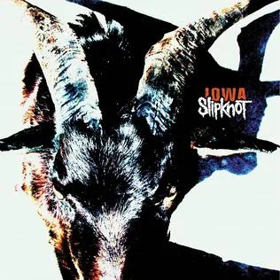
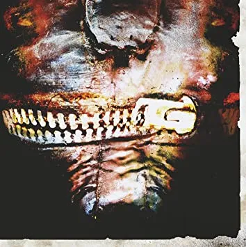
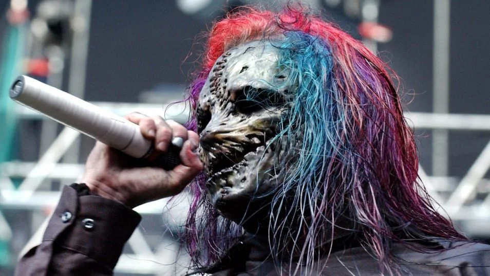
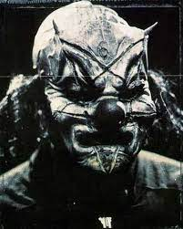
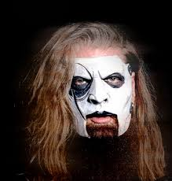
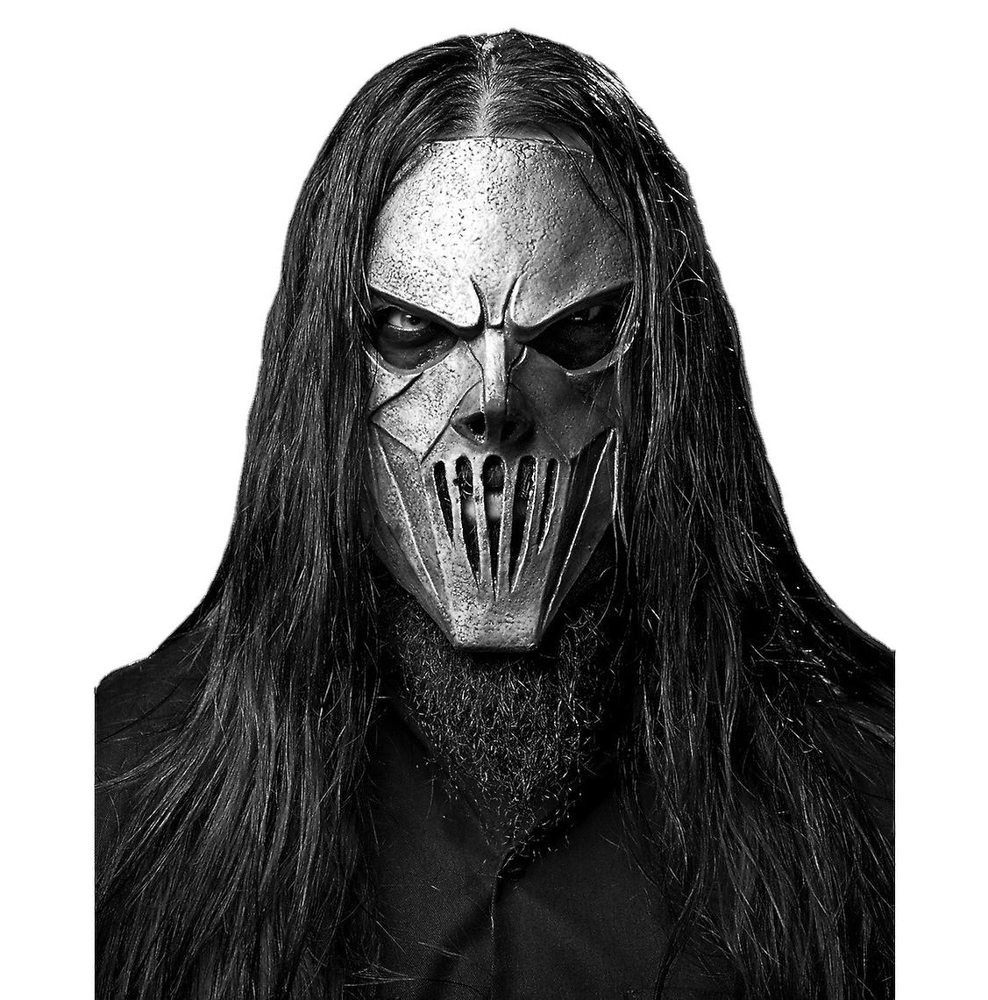
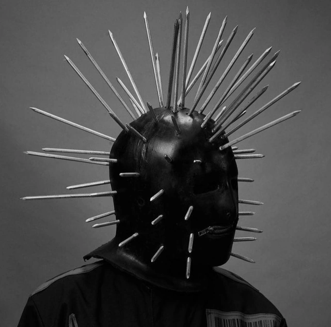
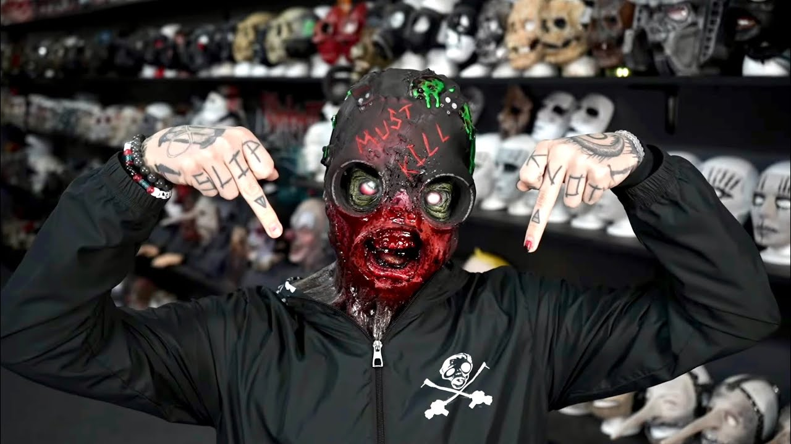
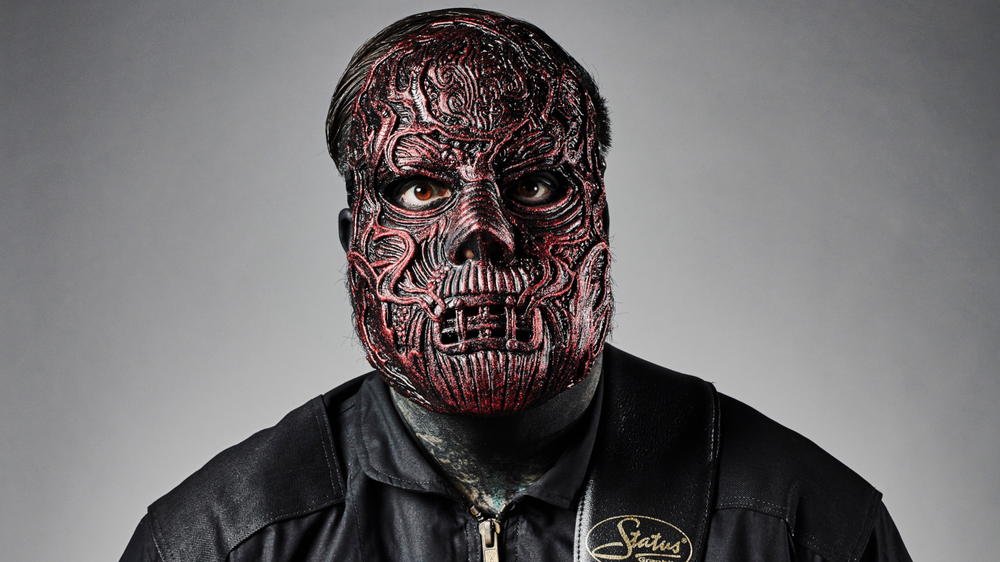
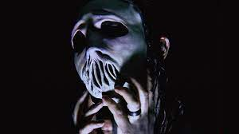

About Slipknot
Slipknot is a Grammy Award-winning heavy metal band from Des Moines, Iowa. Formed in 1995, the band is known for its aggressive musical style, energetic live performances, and distinctive image, including their masks and jumpsuits. Slipknot's music often explores themes of darkness, anger, and personal struggle, resonating with fans around the world.
The band's lineup consists of:
- Corey Taylor
- Shawn Crahan
- Jim Root
- Mick Thomson
- Craig Jones
- Sid Wilson
- Alessandro Venturella
- Jay Weinberg
Band Background
Slipknot is an American heavy metal band formed in Des Moines, Iowa, in 1995. The band was founded by percussionist Shawn Crahan and bassist Paul Gray, who recruited several additional members, including vocalist Corey Taylor, drummer Joey Jordison, and guitarist Mick Thomson. Slipknot gained popularity in the late 1990s with their self-titled debut album, which showcased their aggressive musical style and theatrical live performances.
Over the years, Slipknot has released several successful albums, including "Iowa," "Vol. 3: (The Subliminal Verses)," and ".5: The Gray Chapter." The band has won multiple awards, including a Grammy Award for Best Metal Performance.
Despite facing challenges such as lineup changes and personal tragedies, Slipknot has remained a dominant force in the metal scene, known for their intense energy, innovative sound, and loyal fanbase.
Albums
- Mate. Feed. Kill. Repeat. (1996): Slipknot's self-released debut album, featuring a raw and experimental sound.
- Slipknot (1999): The band's eponymous major-label debut, showcasing their aggressive and chaotic style.
- Iowa (2001): A darker and more intense album, exploring themes of anger, pain, and nihilism. 
- Vol. 3: (The Subliminal Verses) (2004): A departure from the band's earlier sound, incorporating more melodic elements while retaining their trademark intensity. 
- All Hope Is Gone (2008): A diverse album that blends elements of heavy metal, hard rock, and alternative metal.
- .5: The Gray Chapter (2014): A tribute to the late bassist Paul Gray, featuring a mix of aggression and introspection.
- We Are Not Your Kind (2019): A return to the band's roots with a renewed sense of experimentation and intensity.


Popular Songs and Their Meanings
- "Wait and Bleed": This song is about the feeling of being trapped and unable to escape from oneself.
- "Duality": It explores the duality of human nature and the struggle between conflicting emotions.
- "Psychosocial": The lyrics address the pressures and anxieties of modern society.
- "Before I Forget": It reflects on the fear of losing memories and identity.
- "Snuff": A haunting ballad that deals with themes of regret and lost love.
Masks and Inspirations
Each member of Slipknot wears a unique mask that reflects their personality and stage persona. The masks are often inspired by various sources, including horror movies, mythology, and personal experiences.
- Corey Taylor: His mask has evolved over the years, often featuring a gruesome and unsettling appearance. 
- Shawn Crahan (Clown): Known for his clown mask, which represents chaos and unpredictability. 
- Jim Root: Often wears a mask resembling a gas mask or a skull, symbolizing death and decay. 
- Mick Thomson: His mask typically features a metallic and intimidating design, reflecting his aggressive stage presence. 
- Craig Jones: His mask is often minimalist and abstract, representing anonymity and mystery. 
- Sid Wilson: Known for his unique gas mask-inspired mask, reflecting his energetic and chaotic stage persona. 
- Alessandro Venturella: His mask often features a metallic and industrial design, symbolizing strength and resilience. 
- Jay Weinberg: His mask has varied over time, but often reflects a menacing and intense appearance. 